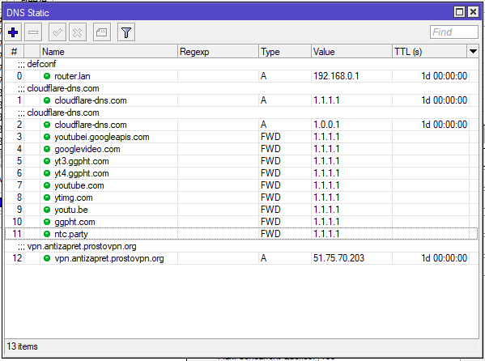
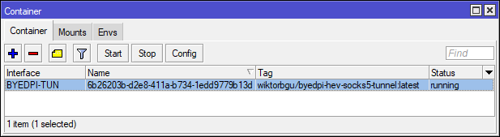

Вопреки распространенному и вводящему в заблуждение мнению, на MikroTik можно настроить работу антиDPi. Основные требования: роутер должен быть на ARM/ARM64/x86/x64(mipsbe/smips итд не подойдет, на hap ac2 обязательно поставить галочку single process в routing->settings для освобождения ram, а так же стоит установить старый модуль wireless вместо wifi-qcom-ac или отказаться от wifi в виду ограниченного кол-ва ram) и установлен пакет для поддержки контейнеров, а так же его работа разрешена, ну и очень желательно иметь внешнюю флешку для этого дела (фс только ext4). Огромная благодарность за решение и разрешение на публикацию: @wiktorbgu . К сожалению, лично у меня на таттелекоме не работает после этого вообще, но, возможно, кто-то найдется и внесет свои дополнительные исправления в этот набор. На ROS6/mipsbe думаю можно завести аналогичную тему через MetaRouter - виртуализация openwrt с последующей насадкой модулей. Оригинальная статья: https://habr.com/ru/articles/838452/ (доступна только под vpn)
Команды в настройку за один присест (стоит их скопировать сначала в notepad++ и потом только в terminal):
Summary
/interface/bridge add name=Bridge-Docker port-cost-mode=short
/ip/address add address=192.168.254.1/24 interface=Bridge-Docker network=192.168.254.0
/interface/veth add address=192.168.254.5/24 gateway=192.168.254.1 name=BYEDPI-SOCKS
/interface/veth add address=192.168.254.2/24 gateway=192.168.254.1 name=TUN2SOCKS
/interface/bridge/port add bridge=Bridge-Docker interface=BYEDPI-SOCKS
/interface/bridge/port add bridge=Bridge-Docker interface=TUN2SOCKS
/container/config set registry-url=https://registry-1.docker.io tmpdir=/usb1/docker/pull
/container/add remote-image=tazihad/byedpi:latest interface=BYEDPI-SOCKS cmd="--disorder 1 --auto=torst --tlsrec 1+s --debug 1" root-dir=/usb1/docker/byedpi start-on-boot=yes
/container/envs/ add key=LOCAL_ROUTE name=tun2socks value="ip r a 192.168.0.0/16 via 192.168.254.1;ip r a 10.0.0.0/8 via 192.168.254.1;ip r a 172.16.0.0/12 via 192.168.254.1"
/container/envs/ add key=SOCKS5_ADDR name=tun2socks value=192.168.254.5
/container/add remote-image=snegowiki/hev-socks5-tunnel-mikrotik:latest interface=TUN2SOCKS root-dir=usb1/docker/hev-socks5-tunnel start-on-boot=yes envlist=tun2socks
/ip/dns set address-list-extra-time=1d
/ip/dns/static/ add address-list=za_dpi_FWD forward-to=localhost match-subdomain=yes name=googlevideo.com type=FWD
/ip/dns/static/ add address-list=za_dpi_FWD forward-to=localhost match-subdomain=yes name=youtube.com type=FWD
/ip/dns/static/ add address-list=za_dpi_FWD forward-to=localhost match-subdomain=yes name=youtubei.googleapis.com type=FWD
/ip/dns/static/ add address-list=za_dpi_FWD forward-to=localhost match-subdomain=yes name=ytimg.com type=FWD
/ip/dns/static/ add address-list=za_dpi_FWD forward-to=localhost match-subdomain=yes name=youtu.be type=FWD
/ip/dns/static/ add address-list=za_dpi_FWD forward-to=localhost match-subdomain=yes name=ggpht.com type=FWD
/ip/dns/static/ add address-list=za_dpi_FWD forward-to=localhost match-subdomain=yes name=rutracker.org type=FWD
/ip/dns/static/ add address-list=za_dpi_FWD forward-to=localhost match-subdomain=yes name=rutracker.cc type=FWD
/ip/dns/static/ add address-list=za_dpi_FWD forward-to=localhost match-subdomain=yes name=medium.com type=FWD
/routing/table add disabled=no fib name=dpi_mark
/ip/route add disabled=no distance=1 dst-address=0.0.0.0/0 gateway=192.168.254.2%Bridge-Docker pref-src="" routing-table=dpi_mark scope=30 suppress-hw-offload=no target-scope=10
/ip firewall mangle add action=mark-routing chain=prerouting comment="List DNS FWD route to tun2socks => byedpi" connection-state="" dst-address-list=za_dpi_FWD in-interface-list=LAN new-routing-mark=dpi_mark passthrough=no
/ip/firewall/address-list/ add address=10.0.0.0/8 list=local
/ip/firewall/address-list/ add address=172.16.0.0/12 list=local
/ip/firewall/address-list/ add address=192.168.0.0/16 list=local
/ip firewall nat add action=redirect chain=dstnat dst-address-list=!local dst-port=53 in-interface-list=LAN protocol=udp
/ip firewall nat add action=redirect chain=dstnat dst-address-list=!local dst-port=53 in-interface-list=LAN protocol=tcp
После выполнения команд необходимо запустить 2 добавленных контейнера и перезагрузить роутер.
UPD: Вариант размещения антиdpi на роутере не совместим с антизапретом через openvpn на нем же, потому что происходит наложение маршрутов, просьба помочь с этим. У меня лично завелось все с --fake -1 --ttl 10 --auto=ssl_err --fake -1 --ttl 5 в аргументах контейнера.
UPD2: Если нет возможности использовать DoH или 7.16rc4(якобы все еще сырая прошивка), то нужно указать dns заместо localhost в dns static.
UPD3: Удалось совместить АнтиЗапрет и ютаб с другими сайтами путем указания им публичного dns снова через dns static.
Summary

ВНИМАНИЕ: Обход DPI работает только в случае блокировки сайта не по IP-адресу, тот же xvideos.com не откроется таким методом. Проверить можно по выдаче nslookup и проверкой ip.
P.S.Огромная благодарность @wiktorbgu , @dartraiden , @hufrea и другим кого не смог упомянуть.
Обновил инструкцию, для тех у кого не открывается оригинальная статья
наверное к требованиям стоит допипсать что нужно ещё кучу оперативной памятьи, как вот тут обсуждалось, например ас2 сосвоими 128 метрами идёт на…
UPD4: Оптимальный вариант для себя пошел с такими аргументами и обязательным указанием статики в arp для контейнеров (после ребута mac сменится у них, добавить заново придется)
–disorder 1 --split 1 --fake -1 --ttl 10 --auto=ssl_err --fake -1 --ttl 5 --debug 1
UPD5: Тк нельзя стало почему-то по не понятным причинам отредачить первый пост, для контейнеров рекомендую использовать ветки test вместо latest
/container/add remote-image=tazihad/byedpi:test interface=BYEDPI-SOCKS cmd="--disorder 1 --auto=torst --tlsrec 1+s --debug 1" root-dir=/usb1/docker/byedpi start-on-boot=yes
/container/add remote-image=snegowiki/hev-socks5-tunnel-mikrotik:test interface=TUN2SOCKS root-dir=usb1/docker/hev-socks5-tunnel start-on-boot=yes envlist=tun2socks
По ощущениям работает реще все, ну и для просто arm тиков только с них возможна установка на текущий момент. И да, контейнеры можно удалять и переставлять независимо от проделанных действий, если у кого есть вопросы на этот счет. Для дескорда этот способ разблокировки тоже можно использовать, но только для статики без голоса по понятной всем причине.
Новая версия https://hub.docker.com/r/wiktorbgu/byedpi-mikrotik и достаточно только одного модуля теперь, занимает куда меньше ресурсов
Любителям byedpi  велком ту тестинг ))
велком ту тестинг ))
https://hub.docker.com/r/wiktorbgu/byedpi-hev-socks5-tunnel
наконец-то все в одном контейнере 
tag:test
Новый вариант настройки и контейнера в ориге статьи уже есть: [Решаем проблему блокировок (и YouTube) за 5 минут на роутере Mikrotik через контейнеры и без VPN / Хабр]
ВНИМАНИЕ!!! Предыдущие варианты настроек должны быть удалены перед установкой нового контейнера, чтобы не возникало проблем на пустом месте.
Для тех кто не хочет далеко ходить, быстрая настройка тут
/tool fetch https://cacerts.digicert.com/DigiCertGlobalRootG2.crt.pem
/certificate import file-name=DigiCertGlobalRootG2.crt.pem passphrase=""
/ip dns set use-doh-server=https://1.1.1.1/dns-query verify-doh-cert=yes
/interface/bridge add name=Bridge-Docker port-cost-mode=short
/ip/address add address=192.168.254.1/24 interface=Bridge-Docker network=192.168.254.0
/interface/veth add address=192.168.254.2/24 gateway=192.168.254.1 name=BYEDPI-TUN
/interface/bridge/port add bridge=Bridge-Docker interface=BYEDPI-TUN
/container/config set registry-url=https://registry-1.docker.io tmpdir=/usb1/docker/pull
/container/add remote-image=wiktorbgu/byedpi-hev-socks5-tunnel interface=BYEDPI-TUN cmd="--disorder 1 --auto=torst --tlsrec 1+s" root-dir=/usb1/docker/byedpi-hev-socks5-tunnel start-on-boot=yes
/ip/dns set address-list-extra-time=0s # set to default
/ip/dns/static/ add address-list=za_dpi_FWD forward-to=localhost match-subdomain=yes name=googlevideo.com type=FWD
/ip/dns/static/ add address-list=za_dpi_FWD forward-to=localhost match-subdomain=yes name=youtube.com type=FWD
/ip/dns/static/ add address-list=za_dpi_FWD forward-to=localhost match-subdomain=yes name=youtubei.googleapis.com type=FWD
/ip/dns/static/ add address-list=za_dpi_FWD forward-to=localhost match-subdomain=yes name=ytimg.com type=FWD
/ip/dns/static/ add address-list=za_dpi_FWD forward-to=localhost match-subdomain=yes name=youtu.be type=FWD
/ip/dns/static/ add address-list=za_dpi_FWD forward-to=localhost match-subdomain=yes name=ggpht.com type=FWD
/ip/dns/static/ add address-list=za_dpi_FWD forward-to=localhost match-subdomain=yes name=rutracker.org type=FWD
/ip/dns/static/ add address-list=za_dpi_FWD forward-to=localhost match-subdomain=yes name=rutracker.cc type=FWD
/ip/dns/static/ add address-list=za_dpi_FWD forward-to=localhost match-subdomain=yes name=medium.com type=FWD
/ip/dns/static/ add address-list=za_dpi_FWD forward-to=localhost match-subdomain=yes name=facebook.com type=FWD
/ip/dns/static/ add address-list=za_dpi_FWD forward-to=localhost match-subdomain=yes name=fbcdn.net type=FWD
/ip/dns/static/ add address-list=za_dpi_FWD forward-to=localhost match-subdomain=yes name=x.com type=FWD
/ip/dns/static/ add address-list=za_dpi_FWD forward-to=localhost match-subdomain=yes name=twitter.com type=FWD
/ip/dns/static/ add address-list=za_dpi_FWD forward-to=localhost match-subdomain=yes name=linkedin.com type=FWD
/ip/dns/static/ add address-list=za_dpi_FWD forward-to=localhost match-subdomain=yes name=prntscr.com type=FWD
/ip/dns/static/ add address-list=za_dpi_FWD forward-to=localhost match-subdomain=yes name=prnt.sc type=FWD
/ip/dns/static/ add address-list=za_dpi_FWD forward-to=localhost match-subdomain=yes name=t.co type=FWD
/ip/dns/static/ add address-list=za_dpi_FWD forward-to=localhost match-subdomain=yes name=protonvpn.com type=FWD
/ip/dns/static/ add address-list=za_dpi_FWD forward-to=localhost match-subdomain=yes name=nnmclub.to type=FWD
/ip/dns/static/ add address-list=za_dpi_FWD forward-to=localhost match-subdomain=yes name=ntc.party type=FWD
/routing/table add disabled=no fib name=dpi_mark
/ip/route add disabled=no distance=1 dst-address=0.0.0.0/0 gateway=192.168.254.2%Bridge-Docker pref-src="" routing-table=dpi_mark scope=30 suppress-hw-offload=no target-scope=10
/ip firewall mangle add action=mark-connection chain=prerouting connection-mark=no-mark dst-address-list=za_dpi_FWD in-interface-list=LAN new-connection-mark=to_dpi passthrough=yes
/ip firewall mangle add action=mark-routing chain=prerouting comment="To DPI" connection-mark=to_dpi in-interface-list=LAN new-routing-mark=dpi_mark passthrough=no routing-mark=!dpi_mark
/ip firewall filter set [find action=fasttrack-connection] packet-mark=no-mark connection-mark=no-mark
/ip/firewall/address-list/ add address=10.0.0.0/8 list=local
/ip/firewall/address-list/ add address=172.16.0.0/12 list=local
/ip/firewall/address-list/ add address=192.168.0.0/16 list=local
/ip firewall nat add action=redirect chain=dstnat dst-address-list=!local dst-port=53 in-interface-list=LAN protocol=udp
/ip firewall nat add action=redirect chain=dstnat dst-address-list=!local dst-port=53 in-interface-list=LAN protocol=tcp
:delay 10s
/container start [find interface=BYEDPI-SOCKS]
/container start [find interface=TUN2SOCKS]

Уважаемый bunkerfox, а можно, пожалуйста, подробнее, как Вы совместили контейнер с “впн-антизапретом”, с учетом нового варианта настройки от 7 ноября и выхода stable ROS 7.16.1?
Через перенаправление dns для доменов
Т.е. без использования DOH?
DoH у меня стоит, который потом убирается скриптом при подключении АнтиЗапрета и наоборот. Но сидеть в нынешнем интернете без DoH вообще…равносильно выстрелу в ногу себе, другой вопрос если провайдер его зачем-то режет. И в целом щас контейнер обновился уже, свежий вариант тут:
https://hub.docker.com/r/wiktorbgu/byedpi-hev-socks5-tunnel и он же щас вполне дружит с hap ac2
{kind=link}
Вон чего! Спасибо! Вроде в ROS 7.17, которая на подходе, обещают в раздел dns static включить возможность редиректа через DOH, который там же и будет задаваться, т.е. индивидуально для каждого домена.
Добрый день всем, кто поможет настроить микротик по этой теме? Сам не разбираюсь вообще. Контакты боюсь оставлять , не знаю разрешено ли это. Отблагодарю.
UPD6: Дискорд тоже возможно распломбировать через контейнер путем маркировки трафика. Скорее всего и остальное udp реалтайм можно завернуть.
На компе в powershell от рута:
New-NetQosPolicy -name “discord” -NetworkProfile All -DSCPAction 34 -AppPathName discord.exe -IPProtocol Both -PolicyStore “ActiveStore”
На роутере:
/ip firewall mangle add action=mark-connection chain=prerouting comment=“34 - to_dpi” connection-mark=no-mark dscp=34 in-interface-list=LAN new-connection-mark=to_dpi
И расположить над существующими правилами контейнера
Огромная благодаронсть @wiktorbgu
в текущей версии 7.17rc2 можно добавить файл подкачки и будет ему легче работаться
здесь в качестве подкачки используется раздел флешки
/disk format-drive usb1 file-system=wipe duration=10s
/disk add type=partition parent=usb1 partition-size=8G
/disk add type=partition parent=usb1 partition-size=512M
/disk format-drive usb1-part1 file-system=ext4
/disk set swap=yes usb1-part2
здесь используется файл, но нужно установить пакет rose-storage
/disk add file-path=usb1/swap file-size=1024M slot=swap type=file
/disk set swap swap=yes
Влажное уточнение, в settings у disks должны быть галочки сняты перед этим или будет ошибка при установке подкачки
это я недоскопировал
в самом начале - для варианта с разделом
/ip smb set enabled=no
/disk settings set auto-smb-sharing=no auto-media-sharing=no
4к новый микротик https://www.ozon.ru/product/mikrotik-marshrutizator-hap-ax-lite-l41g-2axd-1244924805 кому надо
tpws под mikrotik от @wiktorbgu
https://hub.docker.com/r/wiktorbgu/tpws-zapret-mikrotik
пока только как сокс прокси, но с браузера шустро работает
Настроил на ax3 по последней инструкции, в браузере Ютуб заработал, но приложения на мобиле а так же воспроизведение с мобилы на коди работать отказалось. Всяко разно упражнялся с аргументами контейнера-так и не заработало. Может быть не все домены ютуба в списке указаны? Или куда ещё можно посмотреть? Трассировку с мобилы снимал, там домен youtube.com заворачивался в контейнер. Ещё не разобрался как tmdb завернуть в контейнер, вроде кучу всяких доменов tmdb завернул по типу остальных доменов но Коди ругается на невозможность соединения с ней.
В общем, айнидхелп.
И ещё вопрос- аргументы настроек контейнера можно брать из подборки в byebyedpi для андроида?
да можно брать команды из разных подборок для байдпи
можете настроить сокс если ПО поддерживает и проверить прямо через контейнер работает ли ресурс, если да то будете искать хосты для добавления в список на роутер или можно так и оставить)
Отключите ipv6 везде где можно, зачастую он сам себе проблемы из ничего создает, тк SLAAC. Ну и практика показывает, что не все домены надо пропускать через byedpi и на теликах так вообще стоит погасить быстрый запуск, чтобы из кэша не тянуло не понятно что. Плюс на перехват dns еще добавить порты 1253, 5353, чтобы наверняка. И да, выше для dscp стереть -PolicyStore “ActiveStore”, чтобы работала маркировка трафика всегда, а не только до ребута, почему-то нельзя редачить посты.
Ставит в тупик то, что в браузере на мобиле Ютуб работает а из приложения на той же мобиле не работает. По логике получается что приложение идёт на какие-то другие домены.
Не совсем понимаю как настроить работу именно приложения Ютуба через сокс.
Переборка аргументов это отдельный кекс.
Как правильно их менять? Надо ли тормозить контейнер и ребутать роутер после изменения аргументов?
Да, контейнер перезапускать надо после изменений. И частные dns не включены ли еще на телефоне?
Ipv6 вроде отключал. У меня на Коди не совсем приложение. Есть функция в телефоне при просмотре Ютуба из браузера или приложения перенести воспроизведение выбранного ролика на Коди. Как это реализовано я хз. По факту раньше все это работало абсолютно стабильно и без глюков, выбрал ролик и отправил его в Коди. Сейчас получилось, что в браузере я ролик смотрю, но отправив его на Коди воспроизведения нет. Из логического объяснения только то, что какие-то домены пролетают мимо контейнера, тем самым не работает оно как должно. Вроде понятно расписал.
Нет, никаких днс нет, пробовал статический адрес указать телефону и в качестве днс был адрес роутера, картина не менялась. В браузере работал Ютуб, в приложении нет.
А приложение банально пробовали остановить и ему кэш сбросить? nslookup на телефоне правильно все выводит или у вас ифон?
Я ребутал телефон полностью и Коди неоднократно. Лукапом не смотрел, через приложуху Fing посмотрел трассировку нескольких доменов Ютуба из руководства по настройке, все заворачивались на ip контейнера. Опять таки если следовать логике и в браузере работает а приложение нет, то 99,9% что-то не заворачивается в контейнер а идёт через днс провайдера а не через контейнер и DoH
Попробуйте заново все настроить с соблюдением актуальной инструкции и без переделок после.
На выходных ещё раз попробую. Откатился пока на состояние до настройки. Как можно поймать трафик от приложения мобилы? Глянуть бы куда оно ломится и скорее всего это бы сняло вопрос
Либо ещё как дурацкое предположение может быть стоит попробовать не через 1.1.1.1 DoH а через 9.9.9.9? Хотя с точки зрения логики пофигу. Если бы была проблема с днс то нигде бы не работало, в браузере в том числе. И да, рутрекер работал тоже. Остальные домены я не добавлял в контейнер
В вашем случае может быть все что угодно, пробуйте - что будет работать, то и оставьте.
Подскажите, пожалуйста: В инструкции на Хабре в разделе про установку mangle - правил указано 2 правила:
/ip firewall mangle add action=mark-connection chain=prerouting connection-mark=no-mark dst-address-list=za_dpi_FWD in-interface-list=LAN new-connection-mark=to_dpi passthrough=yes
/ip firewall mangle add action=mark-routing chain=prerouting comment="To DPI" connection-mark=to_dpi in-interface-list=LAN new-routing-mark=dpi_mark passthrough=no routing-mark=!dpi_mark
При этом непосредственно у Wiktorbgu на hub.docker.com/r/wiktorbgu/byedpi-hev-socks5-tunnel, указано одно правило:
/ip firewall mangle add action=mark-routing chain=prerouting comment="List DNS FWD route to byedpi tunnel" dst-address-list=za_dpi_FWD in-interface-list=LAN new-routing-mark=dpi_mark passthrough=no
Как я понимаю, это два разных варианта одного и того же действия, при этом второй вариант проще первого. Правильно ли я понял, и если да, то какой вариант предпочтительнее?
На докер хабе просто образно набросок для понимания как это использовать.
На хабре более правильно и там обновляемая инфа.
Ясно, спасибо Вам огромное!
Очень Вам признателен за потрясающие разработки!
Решил немного подобновить инструкцию от себя с учетом некоторых моментов:
Summary
Если команда /system/device-mode print показывает container: yes , то все ок, если нет, то для включения режима контейнеров на устройстве нужно выполнить следующую команду и следовать инструкциям в консоли(перезагрузить или нажать кнопку на роутере):
/system/device-mode/update container=yes
/tool fetch https://upgrade.mikrotik.com/routeros/7.17rc7/container-7.17rc7-arm64.npk
# или в зависимости от проца
/tool fetch https://upgrade.mikrotik.com/routeros/7.17rc7/container-7.17rc7-arm.npk
# и ребут для установки
/system/reboot
/ip smb set enabled=no
#необязательно, если не будет использоваться флешка, но таки рекомендуется, чтобы не изнашивать встроенную память
/disk settings set auto-smb-sharing=no auto-media-sharing=no
/disk format-drive usb1 file-system=wipe duration=10s
/disk add type=partition parent=usb1 partition-size=8G
#основной раздел, поменяйте размеры по необходимости в зависимости от размера флешки
/disk add type=partition parent=usb1 partition-size=512M
#подкачка
/disk format-drive usb1-part1 file-system=ext4
/disk set swap=yes usb1-part2
/ip dns set servers=1.1.1.2,1.0.0.2
# задает опорные plaindns с фильтрацией от вредоносных доменов
/tool fetch https://cacerts.digicert.com/DigiCertGlobalRootG2.crt.pem
# дождаться скачивания сертификата и затем можно копировать все команды целиком
/certificate import file-name=DigiCertGlobalRootG2.crt.pem passphrase=""
/ip dns set use-doh-server=https://security.cloudflare-dns.com/dns-query verify-doh-cert=yes
# задает dns over https с фильтрацией от вредоносных доменов
/interface/bridge add name=Bridge-Docker port-cost-mode=short
# создание интерфейсов для контейнера
/ip/address add address=192.168.254.1/24 interface=Bridge-Docker network=192.168.254.0
/interface/veth add address=192.168.254.2/24 gateway=192.168.254.1 name=BYEDPI-TUN
/interface/bridge/port add bridge=Bridge-Docker interface=BYEDPI-TUN
/container/config set registry-url=https://registry-1.docker.io tmpdir=/usb1-part1/docker/pull
#настройка адреса для получения контейнеров
/container/add remote-image=wiktorbgu/byedpi-hev-socks5-tunnel:mikro interface=BYEDPI-TUN cmd="-K u -a 5 --auto=none -Kt,h -d1 -s0+s -d3+s -s6+s -d9+s -s12+s -d15+s -s20+s -d25+s -s30+s -d35+s -An -Ku -a1 -An --debug 1" root-dir=/usb1-part1/docker/byedpi-hev-socks5-tunnel logging=yes start-on-boot=yes
#скачивает контейнер и задает аргументы для byedpi, впишите свои в cmd="если не работают эти"
# set to default
/ip/dns set address-list-extra-time=0s
#внесение в список сайтов и доменов, которые нужно гонять через контейнер
/ip dns static
add address-list=za_dpi_FWD disabled=no forward-to=localhost match-subdomain=\
yes name=cloudflare-ech.com ttl=1d type=FWD
add address-list=za_dpi_FWD disabled=no forward-to=localhost match-subdomain=\
yes name=googlevideo.com ttl=1d type=FWD
add address-list=za_dpi_FWD disabled=no forward-to=localhost match-subdomain=\
yes name=googleapis.com ttl=1d type=FWD
add address-list=za_dpi_FWD disabled=no forward-to=localhost match-subdomain=\
yes name=youtube.com ttl=1d type=FWD
add address-list=za_dpi_FWD disabled=no forward-to=localhost match-subdomain=\
yes name=ytimg.com ttl=1d type=FWD
add address-list=za_dpi_FWD disabled=no forward-to=localhost match-subdomain=\
yes name=youtu.be ttl=1d type=FWD
add address-list=za_dpi_FWD disabled=no forward-to=localhost match-subdomain=\
yes name=ggpht.com ttl=1d type=FWD
add address-list=za_dpi_FWD disabled=no forward-to=localhost match-subdomain=\
yes name=rutracker.org ttl=1d type=FWD
add address-list=za_dpi_FWD disabled=no forward-to=localhost match-subdomain=\
yes name=rutracker.cc ttl=1d type=FWD
add address-list=za_dpi_FWD disabled=no forward-to=localhost match-subdomain=\
yes name=medium.com ttl=1d type=FWD
add address-list=za_dpi_FWD disabled=no forward-to=localhost match-subdomain=\
yes name=facebook.com ttl=1d type=FWD
add address-list=za_dpi_FWD disabled=no forward-to=localhost match-subdomain=\
yes name=fbcdn.net ttl=1d type=FWD
add address-list=za_dpi_FWD disabled=no forward-to=localhost match-subdomain=\
yes name=fbcdn.com ttl=1d type=FWD
add address-list=za_dpi_FWD disabled=no forward-to=localhost match-subdomain=\
yes name=x.com ttl=1d type=FWD
add address-list=za_dpi_FWD disabled=no forward-to=localhost match-subdomain=\
yes name=twitter.com ttl=1d type=FWD
add address-list=za_dpi_FWD disabled=no forward-to=localhost match-subdomain=\
yes name=linkedin.com ttl=1d type=FWD
add address-list=za_dpi_FWD disabled=no forward-to=localhost match-subdomain=\
yes name=prntscr.com ttl=1d type=FWD
add address-list=za_dpi_FWD disabled=no forward-to=localhost match-subdomain=\
yes name=prnt.sc ttl=1d type=FWD
add address-list=za_dpi_FWD disabled=no forward-to=localhost match-subdomain=\
yes name=t.co ttl=1d type=FWD
add address-list=za_dpi_FWD disabled=no forward-to=localhost match-subdomain=\
yes name=protonvpn.com ttl=1d type=FWD
add address-list=za_dpi_FWD disabled=no forward-to=localhost match-subdomain=\
yes name=nnmclub.to ttl=1d type=FWD
add address-list=za_dpi_FWD disabled=no forward-to=localhost match-subdomain=\
yes name=ntc.party ttl=1d type=FWD
add address-list=za_dpi_FWD disabled=no forward-to=localhost match-subdomain=\
yes name=discord.gg ttl=1d type=FWD
add address-list=za_dpi_FWD disabled=no forward-to=localhost match-subdomain=\
yes name=discord.com ttl=1d type=FWD
add address-list=za_dpi_FWD disabled=no forward-to=localhost match-subdomain=\
yes name=discord.co ttl=1d type=FWD
add address-list=za_dpi_FWD disabled=no forward-to=localhost match-subdomain=\
yes name=dis.gd ttl=1d type=FWD
add address-list=za_dpi_FWD disabled=no forward-to=localhost match-subdomain=\
yes name=discordstatus.com ttl=1d type=FWD
add address-list=za_dpi_FWD disabled=no forward-to=localhost match-subdomain=\
yes name=discord.gift ttl=1d type=FWD
add address-list=za_dpi_FWD disabled=no forward-to=localhost match-subdomain=\
yes name=discord.new ttl=1d type=FWD
add address-list=za_dpi_FWD disabled=no forward-to=localhost match-subdomain=\
yes name=discord.dev ttl=1d type=FWD
add address-list=za_dpi_FWD disabled=no forward-to=localhost match-subdomain=\
yes name=discordcdn.com ttl=1d type=FWD
add address-list=za_dpi_FWD disabled=no forward-to=localhost match-subdomain=\
yes name=discord.media ttl=1d type=FWD
add address-list=za_dpi_FWD disabled=no forward-to=localhost match-subdomain=\
yes name=discord.app ttl=1d type=FWD
add address-list=za_dpi_FWD disabled=no forward-to=localhost match-subdomain=\
yes name=discordapp.net ttl=1d type=FWD
add address-list=za_dpi_FWD disabled=no forward-to=localhost match-subdomain=\
yes name=discordapp.com ttl=1d type=FWD
add address-list=za_dpi_FWD disabled=no forward-to=localhost match-subdomain=\
yes name=instagram.com ttl=1d type=FWD
add address-list=za_dpi_FWD disabled=no forward-to=localhost match-subdomain=\
yes name=cdninstagram.com ttl=1d type=FWD
add address-list=za_dpi_FWD disabled=no forward-to=localhost match-subdomain=\
yes name=deviantart.com ttl=1d type=FWD
add address-list=za_dpi_FWD disabled=no forward-to=localhost match-subdomain=\
yes name=parastorage.com ttl=1d type=FWD
add address-list=za_dpi_FWD disabled=no forward-to=localhost match-subdomain=\
yes name=wixstatic.com ttl=1d type=FWD
add address-list=za_dpi_FWD disabled=no forward-to=localhost match-subdomain=\
yes name=e621.net ttl=1d type=FWD
add address-list=za_dpi_FWD disabled=no forward-to=localhost match-subdomain=\
yes name=dragonfru.it ttl=1d type=FWD
/routing/table add disabled=no fib name=dpi_mark
#настройка таблицы для обработки контейнером byedpi
/ip/route add disabled=no distance=1 dst-address=0.0.0.0/0 gateway=192.168.254.2%Bridge-Docker pref-src="" routing-table=dpi_mark scope=30 suppress-hw-offload=no target-scope=10
/ip firewall mangle add action=mark-connection chain=prerouting connection-mark=no-mark dst-address-list=za_dpi_FWD in-interface-list=LAN new-connection-mark=to_dpi passthrough=yes
#прописывание правил маркировки трафика в контейнер
/ip firewall mangle add action=mark-routing chain=prerouting comment="To DPI" connection-mark=to_dpi in-interface-list=LAN new-routing-mark=dpi_mark passthrough=no routing-mark=!dpi_mark
/ip firewall filter set [find action=fasttrack-connection] packet-mark=no-mark connection-mark=no-mark
/ip/firewall/address-list/ add address=10.0.0.0/8 list=local
#указываем адреса локальных подсетей
/ip/firewall/address-list/ add address=172.16.0.0/12 list=local
/ip/firewall/address-list/ add address=192.168.0.0/16 list=local
/ip firewall nat add action=redirect chain=dstnat dst-address-list=!local dst-port=53,1253,5353 in-interface-list=LAN protocol=udp
/ip firewall nat add action=redirect chain=dstnat dst-address-list=!local dst-port=53,1253,5353 in-interface-list=LAN protocol=tcp
:delay 20s
#задержка на 20 секунд перед стартом, чтобы успел контейнер скачаться и развернуться
/container start [find interface=BYEDPI-TUN]
#запускаем byedpi и можно проверять как открываются сайты из списка выше
для настройки обхода с discord:
1. на компе в powershell от админа (работать будет только на Windows, глючнекс и макака с ведроидом требуют аналогичной маркировки трафика, а без нее только статичный контент)
New-NetQosPolicy -name "discord" -NetworkProfile All -DSCPAction 34 -AppPathName discord.exe -IPProtocol Both
2. добавить маркировку на роутере и правило поднять выше ранее созданных в Mangle
/ip firewall mangle add action=mark-connection chain=prerouting comment="34 - to_dpi" connection-mark=no-mark dscp=34 in-interface-list=LAN new-connection-mark=to_dpi
Привет, парни.
Перенастроил железку через DoH 9.9.9.9 и все заработало как раньше.
Ютуб заработал на телефоне через приложуху, получилась трансляция
с телефона в коди и т.п. Спасибо вам за советы и ответы.
Остался один маленький нюанс- как правильно перебирать аргументы DPI в контейнере.
Алгоритм, если я правильно все понимаю, такой- стоп контейнер, выставляем параметры, старт контейнер. А перезагрузка роутера нужна? А перезагрузка клиентов?
Все правильно понимаете. Больше никого перезагружать не надо.
Спасибо Вам и Лису большое за ваш труд и ответы
Уважаемый wiktorbgu, извините, что не в рамках текущей темы, не знал, где это лучше написать. Подскажите, пожалуйста, Вы не разрабатывали контейнер “shadowsocks -hev-socks5-tunnel-mikrotik” , т.е. клиент для микротика для ss-сервера (по аналогии с текущим проектом, где и туннель и прокси в одном контейнере)? Если да, то где его можно найти?
Берете контейнер, редачите конфиг xray для коннекта к shadowsocks и редачите entrypoint.sh в корне контейнера чтобы не затирал конфиг и всё
достаточно открыть smb шару до папки контейнера на микротике и все редачится через проводник (я юзаю total commander)
Спасибо, попытаюсь, но не уверен, что получится, т.к. я обладаю только небольшой частью всей этой магии.